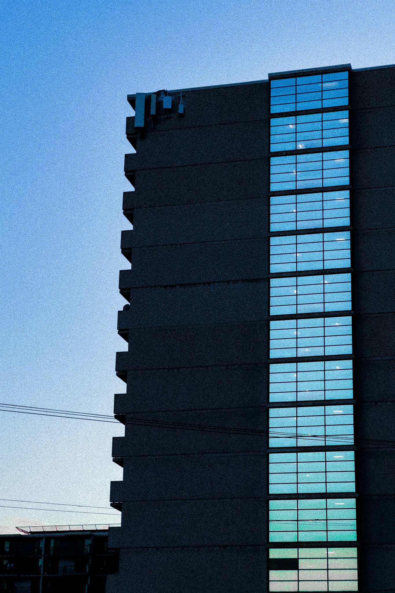
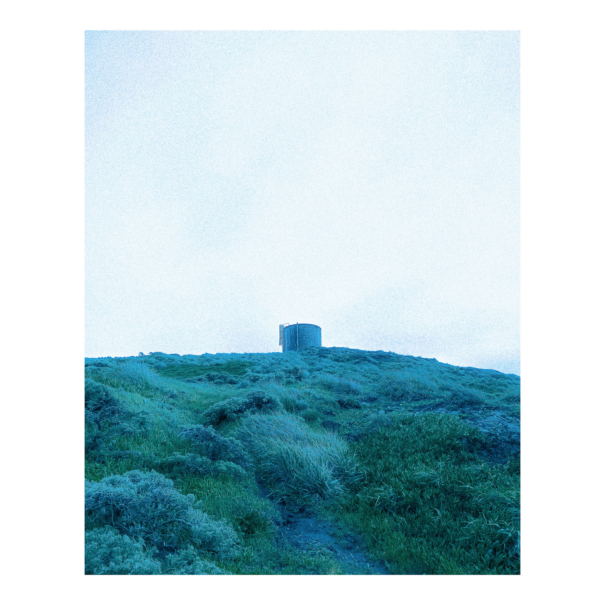
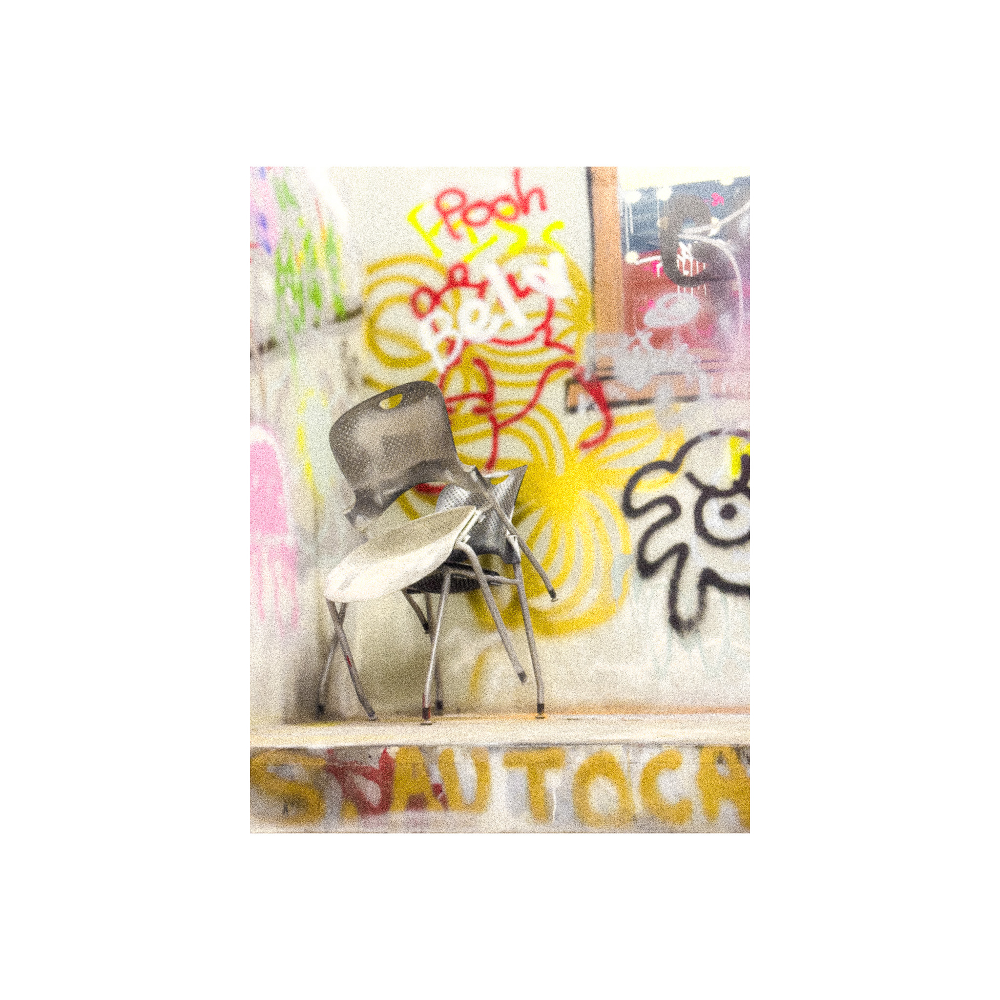
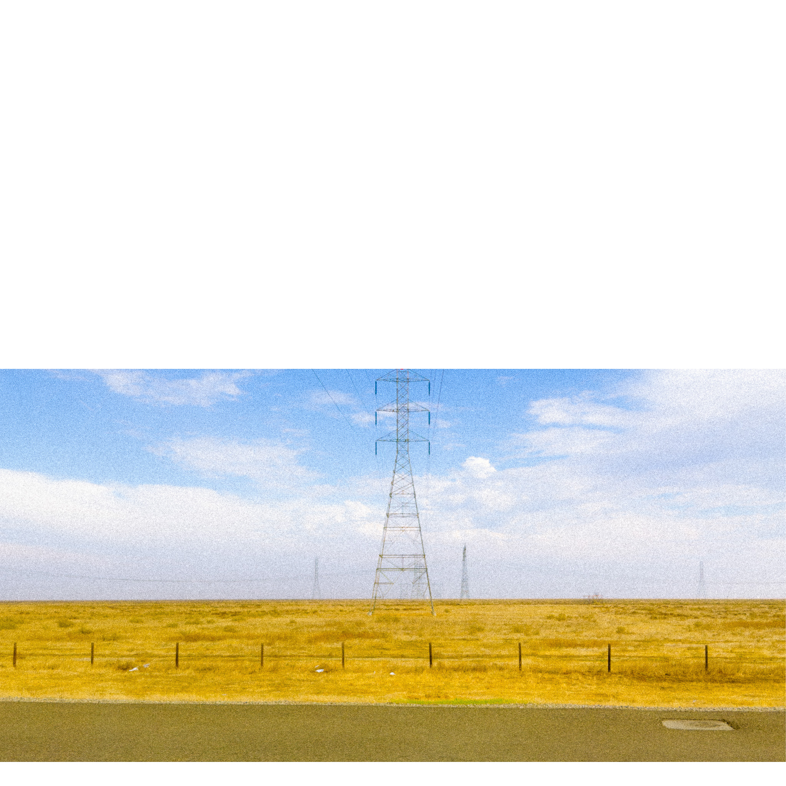
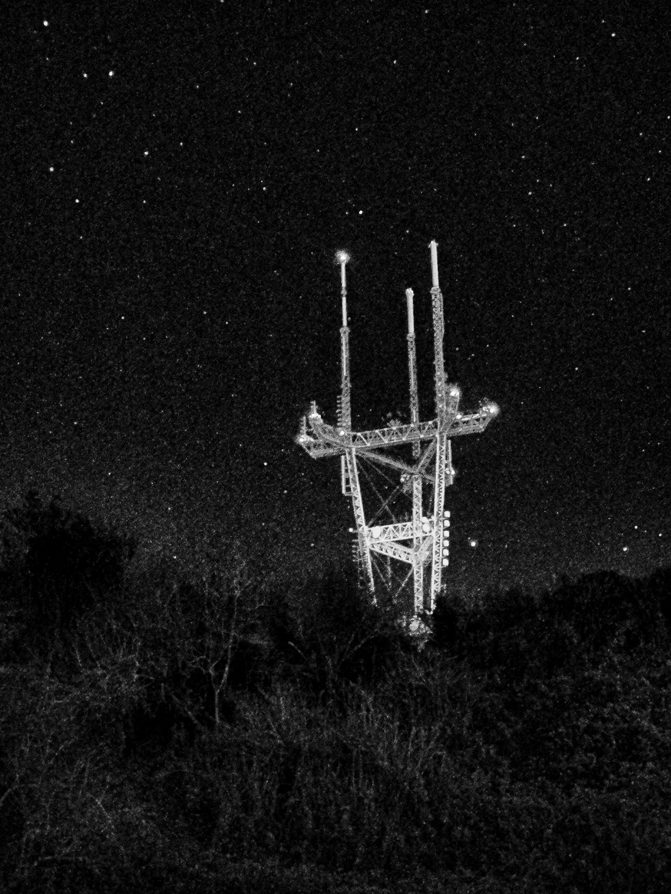

ap_24xx_ph
The Monuments
This collection of photos are taken during moments of unexplainable fascinations. The subjects of these photos are familiar infrastructural objects, but in the moment when the photos were taken, I (the observer) abstracted these objects from their usual functional meanings. These objects performed symbolically rather than functionally.
To me, these everyday objects are “monuments.” Specific spatial conditions stripped away the everyday-ness of these objects, rending them to simply overwhelming forms. In the moment, the only things in space and time are me and them. The objects, in those brief instances, are manifestations of the observers’ emotions, are monuments of distress.

June 2022, Interstate 15
February 2023, Downtown Los Angeles
March 2022, Point Reyes
September 2024, Bauer Wurster Hall, Berkeley
December 2024, Interstate 5
February 2024, San Francisco Twin Peaks